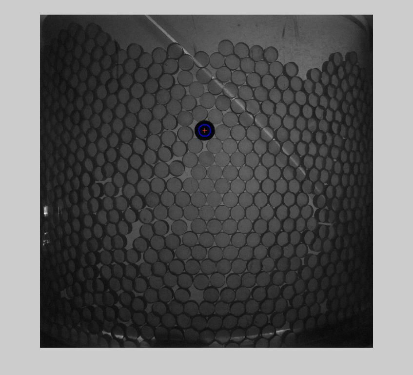
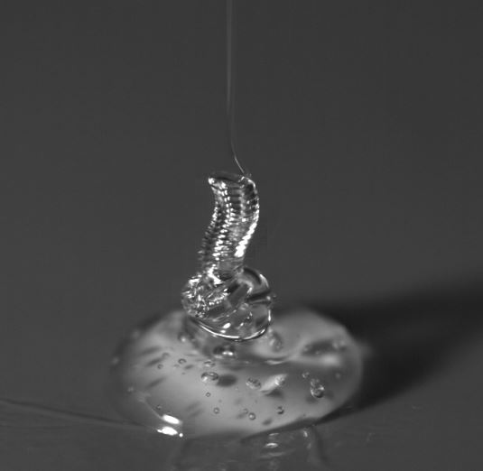

We study the two-dimensional bidisperse granular flow in a laminar Couette apparatus. The granular system is continuously sheared by a rotating inner wheel. We track the position and orientation of every particle (thin cylinder) to study the rheology of the system with the method of taking photos and image processing. Besides, the force chains can be studied by mounting up two polarizers since the granular particles are made of photoelastic materials.
Our current work focuses on the correlation between the local structure and particle-scale rearrangement in the granular flow which aims to support the theory (unpublished) of Dr. Rafi Blumenfeld, our collaborator.
If your stint was shorter, feel free to be brief and just call out the most meaningful points of your role. Be concise, and be meaninful. The person reading just needs enough to want to talk to you more about your experience.
The liquid rope-coil effect of viscous fluid is common nature phenomenon and needs to be studied quantitatively. Detailed measurement of coiling frequency was done and the frequency-falling height correlation was analyzed in this study. A high speed camera with ability to shoot 5000 pictures in one second was used quantitatively to record the motion of this phenomenon. Silicone oil with viscosity among 1000Cst to 100000Cst is used in experiments. Theoretically, the rheological transition is explained by an asymptotic model which simplifies the coupling between viscous force, gravity and centrifugal force. As a result, model predicts the analytic expression of coiling frequency as a function of falling height, and this relationship is examined by experimental result. Therefore, the model successfully explained the rheological transition in liquid rope coiling.
Moreover, experimental study of energy transportation in coiling process is conducted which is novel in this field and the results raises further theoretical problems open to discuss in the future.
B.S. in physics • 2012 — 2016 (expected)